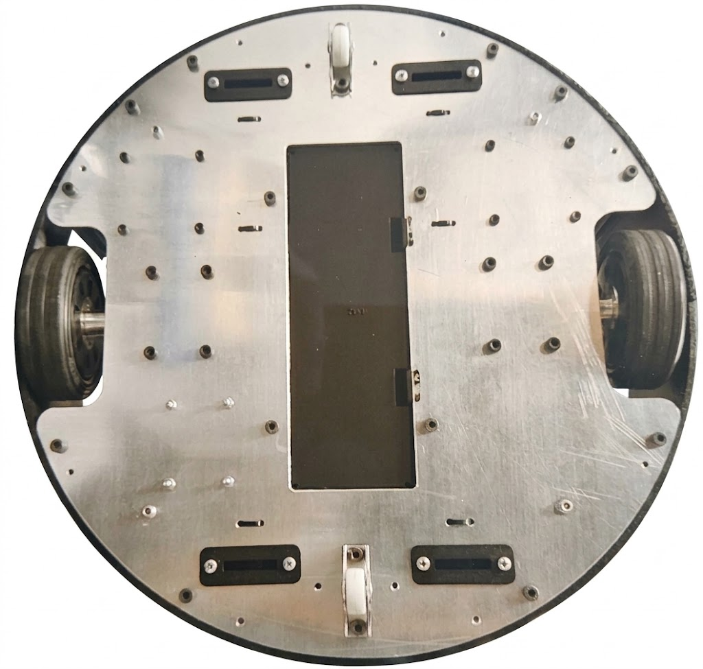

5.2 Sensörler
5.2.1 Orbbec Gemini 335L

Orbbec Gemini 335L, yüksek çözünürlüklü stereo görüntü sensörleri, IR lazer nokta projektörü ve IR aydınlatma LED’i ile donatılmış bir RGB-D kameradır. Bu özellikler, kameranın daha yüksek kalitede derinlik görüntüleri oluşturmasını ve düşük ışık koşullarında daha iyi performans göstermesini sağlar.
Daha fazla bilgi için üreticinin dokümantasyonuna başvurunuz.
5.2.2 RPLIDAR C1

RPLIDAR C1, 360 derece tarama gerçekleştirebilen ve 12 m menzile sahip bir lazer mesafe tarayıcısıdır. Robotun çevresinin iki boyutlu (2D) taramasını oluşturmak amacıyla kullanılır. OrbiRob ve OrbiRob Lite modellerinde bu sensör kullanılmaktadır. Daha fazla bilgi için buraya tıklayınız.
5.2.3 Mesafe Sensörleri
5.2.4 Uçurum Sensörleri
